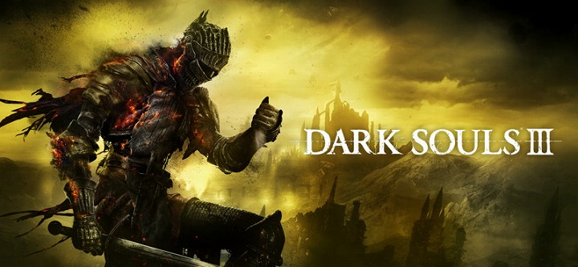

DARK SOULSⅢとは
「DARK SOULSⅢ」は 2016年にフロム・ソフトウェアから発売されたアクションRPGゲームである。
陰鬱で硬派な世界観と、「死にゲー」とも呼ばれるその難しさが人気であり、その人気は国内だけにとどまらず、世界中に熱狂的なファンが存在している。2011年に発売された「DARK
SOULS」から続くソウルシリーズの3作品目であり完結編である。ソフトの総売上数は2021年6月時点で約3100万本を突破している。

フロム・ソフトウェアとは
3Dグラフィックを多用した、主観もしくは背後視点のゲームを多く手掛けているゲーム会社である。
1986年創業で、当初はビジネスアプリケーション開発を手掛けていたが、1994年からPlayStation用ゲームソフトの開発に乗り出し、同年12月に「キングスフィールド」を発売した。
硬派な世界観を持つ作品が多く、中世ファンタジーや時代劇アクション、ロボットメカアクションなど内容は様々である。高難易度なゲームを作ることで知られており、熱狂的なファンも多い。ストーリーの面では、いずれの作品でも設定こそ存在するものの、その多くは語られることはなく、プレイヤーの想像の余地が多く残されている。
近年ではCG技術の高さを活かして、実写のようなムービーを作ることでも有名である。この会社に対しファンからは、その技術力の高さを表す最大限の賛辞として「変態」という言葉が送られている。
「Demon's
Souls」以降、多数の後続作品が生み出され、「ソウル風」という一大ゲームジャンルを生み出すほどの人気を博した。また、フロム自社でもこのジャンルを追求しており、そのジャンルは「DARKSOULS」シリーズの王道ファンタジーだけにとどまらない。人間の狂気と軽快かつ猟奇的な狩りを合わせたゴシックサイコホラーアクション「Bloodborne」や、チャンバラの爽快さを全面に押し出した戦国時代劇風アクション「SEKIRO」など、DARKSOULSの「魂」の部分を変えることなく、新たな息吹を感じさせるゲームを次々世に送り出している。そして2022年、これまでに培ったノウハウを全て注ぎ込まれた作品「ELDEN
RING」が発売され、「SOULS」という作風が到達した一つの完成形とも言える作品に仕上がっている。
ゲームの高い完成度と作り込みから、日本のゲーマー達から任天堂とカプコンに並び、三代ゲーム会社の一つに挙げられている。色々な批判も存在するが、それでも次にどんな作品が出るのか「楽しみ」、そして「ワクワク」を感じることが出来る稀有なゲーム会社である。
縛りプレイとは
ゲームをする際に、プレイヤーに特定の制限を加え、故意に難易度を上げてゲームをプレイすることである。
一見何のための行為かわからないが、制限を加えることで達成したときの感動をより多く得ることができるという体験は他に変えることのできないものである。
制約はゲームによって様々であるが、主にDARK SOULSⅢでは次のような縛りが挙げられる。
- レベル1縛り
- 武器未強化縛り
- ノーダメージ
- 目隠し
- ソウル使用禁止
それぞれの縛りを組み合わせることで、ゲームを高難易度でより楽しく深く遊ぶことができるようになる。
制限を加えることで、今まで使用してこなかった装備や、新しい攻略方法を発見することができるようになる。
装備可能武器ツール
レベル上げを制限したときに、使用可能武器をソートできる。
約170種の武器をステータスで絞り込める。自作のスプレッドシートのリンクを張ったもの。
全武器スプレッドシート